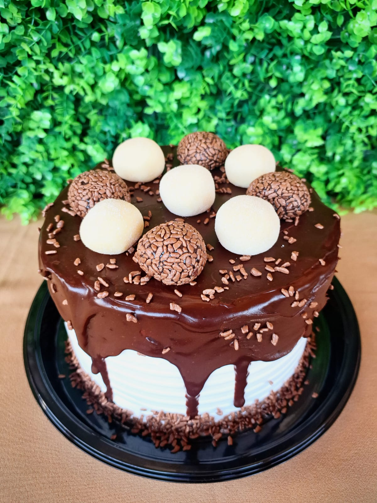
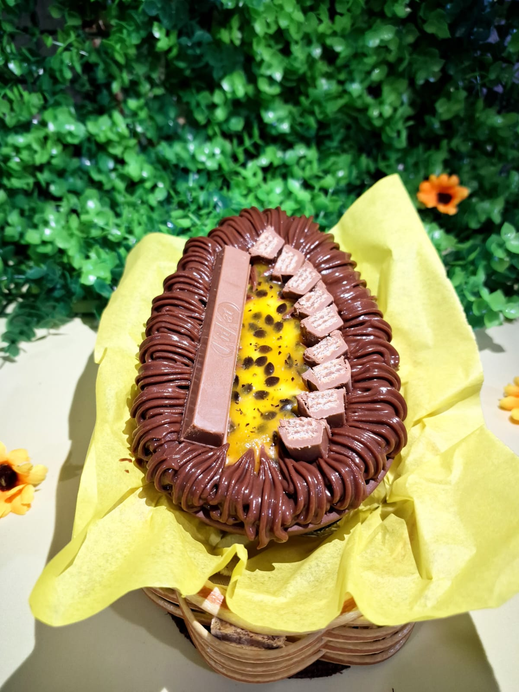

Doces a partir de R$6,00 Reais!
• Brigadeiro, Morango, Maracujá, Creme, entre outros sabores.


Produtos
- Bolos
- Pudins
- Donuts
- Brownies
- Barras Recheadas
- Ovos de Páscoa
- Entre Outros
Sabores
- Morango
- Chocolate
- Limão
- Maracujá
- Creme
- Avelã
- Entre Outros
Localização e Contato
Você pode escolher fazer seu pedido presencialmente marcando horário ou via WhatsApp
Só fazemos entregas na cidade! Valores da taxa de entrega à combinar.
Depoimentos de Clientes Satisfeitos
Sua Satisfação é de Extrema Importância!
Sobre Nós
Nossa História
Desde a iniciativa às vendas, que começaram em 2022, temos nos empenhado em sempre continuar crescendo e inovando cada vez mais para expandir e trazer uma extensa variedade de produtos em nosso cardápio.
Missão
Nossa missão é encantar nossos clientes com doces artesanais maravilhosos e de qualidade, feitos com cuidado e carinho, pois acreditamos que um ótimo sabor vem da forma como foi preparado.
Visão
Expandir nossa presença nacional, sendo reconhecida como confeitaria de qualidade e referência em todo lugar, mantendo sempre a cultura da confeitaria artesanal.
Valores
Integridade, pois mantemos padrões de ética e transparência.
Excelência por sempre buscarmos a perfeição em tudo o que fazemos.
Inovação para sempre avançarmos com ótimas melhorias e novas ideias.
O que Fazemos
Oferecemos produtos como Bolos, doces, pudins, barras recheadas, chocolates, trufas, etc. Atendendo a qualquer cliente interessado em se deliciar com alguma guloseima.
Nossos Diferenciais
A gerência qualificada em curso gastronômico, reconhece a importância do aprendizado, pois sabemos que traz conhecimento especializado e experiência prática para garantir a excelência de cada produto.